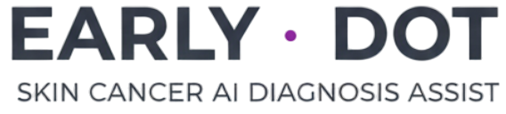

사례 연구 · 2025.10 ~ 11 · 팀장(PM) · NIPA 원장상(최우수상)
EARLY DOT: 피부 사진 한 장으로 위험을 미리 알리고, 의사에게 이어 주는 AI 진단 플랫폼
환자가 피부를 찍어 올리면 AI가 8개 질환으로 분류하고 위험도를 알려 줍니다. 판단 근거는 히트맵으로 보여 주고, 담당 의사가 같은 기록을 보고 소견을 남깁니다. 광주 인공지능사관학교 6기 최종 프로젝트로 만들었고, 팀장을 맡았습니다.

65.1% → 84.6%악성 흑색종 F1 · CNN 단독 → CNN + ViT 하이브리드 (+19.45%p)
8종분류하는 피부 질환 (악성 3 · 경계성 1 · 양성 4)
37,919장학습 데이터 (ISIC 2019·2020·2024 + AI-Hub)
3개 역할환자 · 의사 · 관리자 화면
4개 서비스React · Django API · FastAPI 모델 서버 · MySQL
01 · 무엇을 풀려고 했나"이 점, 병원에 가 봐야 하나?"에 빨리 답하기
흑색종 같은 피부암은 일찍 발견할수록 치료가 쉽지만, 대부분의 점과 반점은 양성이라 사람들은 병원에 갈지 망설입니다. EARLY DOT은 집에서 찍은 사진으로 먼저 위험도를 알려 주고, 위험해 보이면 담당 의사에게 바로 이어지게 하는 것을 목표로 했습니다.
- 환자는 찍어 올리고 결과와 근거를 봅니다.
- 의사는 담당 환자의 AI 결과를 검토하고, 위험도를 다시 매기고, 후속 조치 의견을 남깁니다.
- 관리자는 의사 계정 가입 신청을 확인하고 승인합니다.
모델은 진단을 대신하지 않고 '보조'합니다. 최종 판단은 의사가 하도록 화면과 흐름을 설계했습니다.
02 · 진단 흐름사진 한 장이 의사 화면에 오기까지
1. 촬영·업로드신체 부위를 고르고 사진을 올림
2. 털 제거U-Net으로 털 위치를 찾고 LaMa로 지움
3. 정규화512×512로 맞추고 색 정규화
4. 하이브리드 예측CNN 앙상블 + ViT 확률을 합침
5. 위험도·근거위험도 계산, Grad-CAM 히트맵
6. 의사 검토저장된 결과를 의사가 보고 소견 작성
위험도는 이렇게 매깁니다
높음흑색종·기저세포암·편평세포암·광선각화증 같은 악성·전암성 질환이 가장 높은 확률이고, 그 확률이 0.7 이상
중간악성·전암성 질환 확률이 0.4 이상
낮음 ~ 중간양성 질환(모반·피부섬유종·혈관종 등)이 가장 높은 확률일 때
03 · 사용자별 기능같은 기록을 세 사람이 다르게 봅니다
환자찍고, 확인하고, 연결하기
- 신체 부위 선택 후 사진 촬영·업로드
- 질병명·위험도·확률 분포·Grad-CAM 히트맵 확인
- 과거 진단 기록 조회와 상세 보기
- 담당 의사 지정과 후속 조치 요청
의사검토하고, 판단하고, 남기기
- 담당 환자 목록(성별·소견 필요 여부·AI 심각도 표시, 필터)
- 환자별 진단 내역과 AI 결과 검토
- 위험도 재평가와 후속 조치 의견 작성
관리자믿을 수 있는 의사만
- 의사 가입 신청(면허 증빙) 검토
- 승인·거부
- 사용자와 데이터 관리
로그인은 역할 기반 인증(JWT)으로 나누고, 화면은 휴대폰과 PC 모두에서 쓰도록 반응형으로 만들었습니다.